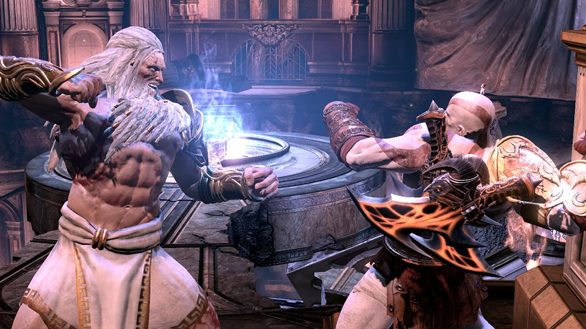
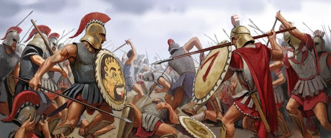

Durante su vida Kratos participo en muchas gloriosas batallas de las
cuales logro salir victorioso, algunas de las mas importantes son:
- La Gran Guerra de los Dioses
En God of War, Kratos inicia una búsqueda para vengarse de los
dioses del Olimpo, lo que lleva a una guerra a gran escala entre
él y varios dioses, titanes y criaturas mitológicas.

Kratos peleando contra Zeus
- La Guerra de Esparta
En God of War: Ghost of Sparta, Kratos regresa a su tierra
natal, Esparta, y participa en la Guerra de Esparta mientras
busca respuestas sobre su pasado.

Guerra Espartana (ilustracion)